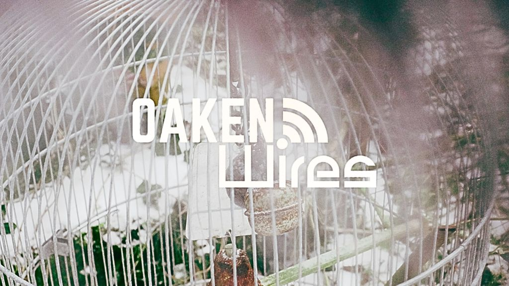

Oaken Wires Leave Their Mark with Footprints

The following feature is now included in our online magazine which is also available in print.
Issue #10
Online Magazine | Print MagazineThere’s a certain intimacy found with a song that seems like it was born out of casual experiment rather than hard work and dedication, and this is precisely what the song Footprints by Oaken Wires has managed to pull off. Born out of an old track on Jake Oaken Lee’s laptop, a track that had been sitting around for a long time, the song was sent over to Tim from CutWires, and what the pair managed to come up with was a track that was not exactly folk and not exactly electronic, but a wonderful amalgamation of the two, full of life and energy.
The song itself has a certain level of weightiness without being too heavy. At its heart, the song is about sticking together through the hard times, about seeing the end but still holding on, and the delicate art of passing the baton on into the next chapter of life. The emotions are immediate and felt, with a certain warmth and openness found with Jake’s vocals, paired with the occasional waves of electricity found with the instrumentation from Tim. It’s a wonderful balance between being uplifting and being sad at the same time, a balance found with few songs today in the world of alt-pop.
Stylistically speaking, Oaken Wires place themselves in a world in which alternative pop, electronic music, and folk rock meet. You can clearly hear the influence of Primal Scream’s early days of experimentation with rock music, Bon Iver’s folk-pop sensibilities, and the Beta Band’s or Alt-J’s experimental approach to music. You can also clearly hear the influence of Youth Lagoon in the way in which Oaken Wires approach the world of electronic music not as a gimmick but as a means of expressing the emotional content of the song’s narrative.
It is also worth noting that Footprints marks the beginning of Oaken Wires as a musical entity. After Tim’s remix of Jake’s song “Reach Out” in the summer of 2025, the two musicians quickly came to realize that the potential of the collaboration between the two was much greater than simply a remix of one song. Oaken Wires is based in Tottenham, North London, and this urban sensibility is what makes Footprints such a compelling piece of music, grounding the ethereal qualities of the song in the textured qualities of the musicianship.
If this song is your cup of tea, then fans of The National’s melodic but subdued approach to music, Bon Iver’s folk-electronica sound, or Alt-J’s playful approach to music production will find much to love here. Footprints also has a cinematic quality to it similar to some of the less intense moments of movies such as Manchester by the Sea or Garden State in which the story is not necessarily advanced but the emotional subtext of the scene is what really makes the movie come alive. When you listen to this song, it’s almost like a series of scenes playing out before your very eyes.
With their song "Footprints," the Oaken Wires demonstrate that collaboration can lead to something akin to alchemy. The song, which began life as a dormant recording, has become a song of connection, transition, and emotional depth. There is a promise here, the debut of a new project with a willingness to explore the edges of sound while maintaining the importance of the human voice. For those who have followed the journey of the modern alt-pop or experimental folk rock sounds, the Oaken Wires are a duo to watch, a duo that has the ability to take the familiar and make it not only alive and relevant, but necessary. "Footprints" is available on all major platforms and is a confident introduction to the ongoing story of the Oaken Wires.
This dispatch was last updated on February 16, 2026